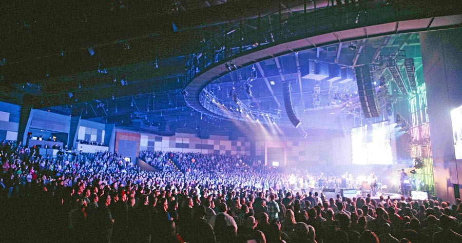
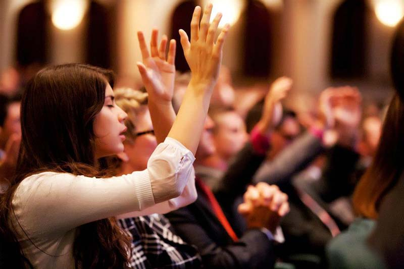

Превращение поклонения Богу в концерт?
ТРИ МНЕНИЯ О ТОМ, КАК НЕ ПРЕВРАТИТЬ БОГОСЛУЖЕНИЕ В ШОУ «ГОЛОС»

Слушай. Доверяй. Улучшай. /Дина Уитковски/
Совсем недавно я посетила наипрекраснейший концерт. Я такого уже много лет не испытывала. Выступал дуэт гитариста и пианиста из Сан-Паоло (Бразилия). В таком составе они выступали впервые. Эти виртуозы (при этом оба отличные композиторы и импровизаторы) прислушивались друг к другу настолько внимательно, что концертный зал стал походить на дом молитвы. Подошла бы эта музыка для богослужения? Вряд ли. Но я смотрела на выступление и удивлялась, насколько оно было лишено «эгоизма», стремления привлечь к себе внимание. Музыканты были чутки к ситуации, стараясь сделать больше, чем просто внести свой личный вклад в выступление, и чутки к сидящим в зале людям. В ответ на это зал отвечал энтузиазмом и вниманием. И музыка стала их общим переживанием. В наших богослужебных залах мы часто используем слово «концерт» с негативным оттенком, относя его к музыкантам и певцам. Но если слово литургия означает «общее дело», то участвуя в литургии каждую неделю, будь мы баптистами или лютеранами, разве не должны мы все трудиться, чтобы сотворить поклонение?
Я — джазовый музыкант. И, чтобы найти свой собственный голос, я изучала великих мастеров, «святых», которые были до меня. Джаз и другие музыкальные стили, где развита импровизация, могут стать живым примером для церкви. Джазовая группа – это такой микрокосмос «сообщества», пытающийся создать нечто большее, чем каждая его отдельная составляющая. У каждого члена джазового ансамбля есть возможности и для сольного выступления, и для поддержки сольного выступления другого солиста аккомпанементом. Музыкальный аккомпанемент (или общение) не заготовлен заранее. Он возникает в ответ на то, что играет в данный момент солист. И ничего не случится без внимательного прислушивания друг к другу. Чтобы джазовый ансамбль имел успех, его члены должны друг другу доверять. Им нужно доверять другим музыкантам и чувствовать, что, как сказала Юлиана Норвичская: «Все будет хорошо». Джазовые музыканты не всегда знают, что будет сыграно через минуту. Но обладая чуткостью к окружающей обстановке, хорошими музыкальными рефлексами и способностью творить звук для «наставления» слушателя, они могут служить неким идеалом для церковных музыкантов. Джазовые гармонии тоже могут подчеркнуть текст, которые поют на богослужении.
Мне, как аранжировщику, нравится иногда изменить гармонию известных гимнов и вместе с моим трио аккомпанировать общему пению. Довольно часто ко мне подходят прихожане после богослужения и говорят, что из-за новой аранжировки текст гимна стал звучат по-новому. И что то, как это было «сыграно» (да, да, именно «сыграно»), тоже очень помогло. И мне приятно, что мой труд помогает Святому Духу говорить сердцам людей, и чувствовать, что и я тоже – часть тела Христова.

Помните о Боге /К. Майкл Хоун/Когда речь заходит о служении музыкального прославления, слово «выступление» носит негативный оттенок, и это зря: те, кто вовлечен в любой аспект публичного поклонения в каком-то смысле «выступает». Никто не хочет, чтобы ведущие поклонения были не готовыми или небрежными. Практически любой христиан может в церкви говорить или молиться, но к музыкальному прославлению допущены лишь те, кто обладает музыкальным «талантом». И наличие такого таланта может создать некую «зону отчуждения» между теми, у кого он есть, и теми, у кого его нет. Я встречал людей, которые говорили о себе, что «у них нет таланта», потому что они не были из числа профессиональных музыкантов. Но это ведь неправда. В то же время музыка – часть христианского поклонения и самоидентификации. Не все религиозные традиции включают в себя музыку. По крайней мере в нашем понимании музыки. Но большая часть христианской истории, особенно в средневековье, немыслима без общего пения во время богослужения.
Тех, кто помогает людям петь во время богослужения, реже всего обвиняют в стремлении устроить «выступление». Видимо, в злоупотреблении желанием «выступать» во время поклонении обвиняют тех музыкантов, чьи дары используются для подчеркивания их профессиональных навыков, как солистов или ансамблей, без оглядки на участие в поклонении всей общины. Эта проблема не нова. И.С. Баха часто обвиняли в излишнем «музицировании» на органе во время богослужений. Папский документ 1903 года «Tra le Sollecitudini» призывал воздерживаться от «театрального стиля» музыки, который «не вполне подходит для аккомпанемента публичного поклонения».
Установка на «выступление» во время поклонения в основном зависит от опыта и ожиданий отдельных участников богослужения. Кому-то именно вот такое ведение богослужебного пения мешает поклоняться, а кому-то помогает. Музыкальные вкусы тоже очень сильно влияют на реакцию пришедших на собрание. Есть еще один аспект – архитектура богослужебного пространства. То, как обустроен зал, зачастую делает из лидеров поклонения тех, кто выступает, а не организует поклонение. Чем больше всяких технологических наворотов (звук, свет, экраны), тем больше вероятность, что кто-нибудь начнет обвинять музыкантов в нарушении границы между ведением поклонения и концертом.
Музыкальные дары лидеров пригодны для поклонения до тех пор, пока они сохраняют библейский подход и создают молитвенную атмосферу хвалы, поклонения, благодарения, исповеди, ходатайства, мольбы, благословения, сопоставляя текст песен с желаниями сердец поющих. Возможно, девиз «Soli Deo gloria» (Во славу Бога), использованный Бахом, Генделем и другими музыкантами на протяжении веков – хорошее начало для любого лидера поклонения. Хотя лидеры поклонения могли бы и слегка модифицировать этот девиз, добавив еще несколько слов: «Во славу Бога и для поклонения собравшегося собрания верующих».
 Не бойтесь «музыкально рисковать» /Моник М. Ингаллз/
Не бойтесь «музыкально рисковать» /Моник М. Ингаллз/
В Гефсиманском саду Иисус просит учеников «бодрствовать и молиться», пока Он борется с искушением избежать крестной смерти. В 1-м послании Петра 5:8 христиан призывают «трезвиться и бодрствовать», чтобы противостоять злу, окружающему их. Эта трезвость и бодрость подразумевает, что мы должны внимательно относиться не только к внутреннему духовному состоянию, но и к звуковой и социальной среде вокруг нас. Лидеры прославления и музыканты не могут «не выступать» во время богослужения. Однако, мы опускаемся до «перфоманса», когда соединяем ведение собрания в поклонение со стремлением развлечь или получить одобрение стоящих в зале.
Чтобы этого избежать, следует изменить перспективу. Вот, с чего нужно начать. Следите за тем, что говорите. Лидерам прославления и музыкантам следует внимательно относиться к способам, с помощью которых они обращаются к слушателям. Ведь эти способы ограничиваются лишь спетыми или сказанным словами. Наши слова повиснут в пустоте, если способ, который мы выбрали, чтобы их донести, будет говорить об обратном. Какой смысл говорить о том, Кому мы поклоняемся, если все, что прихожане видят, это лица музыкантов в свете прожекторов. Что толку говорить о единстве верующих во времени и пространстве, если все наши слова – это регламентированные копирайтом тексты популярных сегодня гимнов? Хватит стараться все контролировать. Желание устроить «перфоманс» убеждает нас согласиться, что эстетическое качество происходящего важнее участия прихожан в поклонении.
Многие богослужения сегодня строятся на стремлении создать «совершенный» звук, который, скорее, доминирует над, а не поддерживает общее пение. Но ведь общее пение – это гораздо больше, чем воскресное караоке. Это мощный, основополагающий символ христианской жизни. Могут ли прихожане осознанно участвовать в поклонении, если они своего голоса совсем не слышат? Музыкальным лидерам следует постоянно искать творческие способы отказаться от тотального контроля над звуком, чтобы помочь прорезаться голосу собрания. Не надо подстраиваться. Перфомансы зачастую возникают там, где лидеры начинают стараться соответствовать определенным музыкальным вкусам и ожиданиям.
Мы постоянно следим за популярными моделями влиятельных церквей и христианской медиа-индустрией. Существует опасность, что наша музыка и поклонение больше будет следовать культу популярности, чем локальному контексту. Все-таки следует использовать песни, стили и слова, которые способствуют назиданию наших конкретных собраний. Рискуйте в музыкальном плане. Экспериментируйте. Когда вы сажаете себя «на диету» одного определенного стиля музыки – поп-рока, госпел или органного пения – очень легко полагаться на свою компетенцию. Понимание, что принятый нами на вооружение единственный музыкальный стиль – всего лишь один из огромного множества стилей – поистине освобождает. В поиске новых источников вдохновения слушайте музыку нашего исторического наследия и музыкальные традиции разных народов. Выход за рамки привычных стилей обогащает и расширяет наш спектр поклонения. Гораздо тяжелее превратить поклонение в концерт, если вы постоянно учитесь и растете.
No Longer Slaves - Steffany Frizzell Gretzinger /Bethel Church/